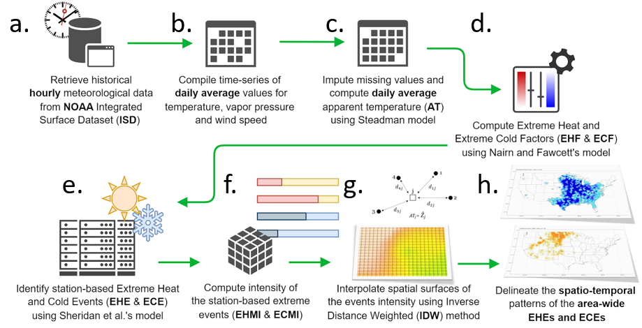

Introducing GridEX for extreme events
 Accurate attribution of the areas and populations impacted by climate-related events often relies on distance-based methodologies in which the population of the study unit is assigned temperature data to the closest weather station. We have developed a method that provides a grid-based measure of exposure to extreme heat and cold events called Grid EXposure (GridEX). This approach allows for capturing a more comprehensive representation of thermal comfort and the perceived temperature. GridEX leverages a data science pipeline to gather station-based climatological data and estimate fine-resolution surfaces of ambient (i.e., the air temperature at 2m above the land surface) and apparent temperature (i.e., the perceived temperature by humans, which takes into account humidity and wind in addition to the actual air temperature) with 500x500m resolution. We validated GridEX against station temperature observations from the NOAA Integrated Surface Database (ISD) and re-analysis climate data provided by GridMET. All the derivative data and the associated source code are publicly available.
Accurate attribution of the areas and populations impacted by climate-related events often relies on distance-based methodologies in which the population of the study unit is assigned temperature data to the closest weather station. We have developed a method that provides a grid-based measure of exposure to extreme heat and cold events called Grid EXposure (GridEX). This approach allows for capturing a more comprehensive representation of thermal comfort and the perceived temperature. GridEX leverages a data science pipeline to gather station-based climatological data and estimate fine-resolution surfaces of ambient (i.e., the air temperature at 2m above the land surface) and apparent temperature (i.e., the perceived temperature by humans, which takes into account humidity and wind in addition to the actual air temperature) with 500x500m resolution. We validated GridEX against station temperature observations from the NOAA Integrated Surface Database (ISD) and re-analysis climate data provided by GridMET. All the derivative data and the associated source code are publicly available.
Check out the GridEX homepage for more information!
Pipeline schematic

We have developed our dataset in a sequential process illustrated in Fig 1:
Data Acquisition: We retrieved a substantial dataset comprising over 800 million historical records of hourly and sub-hourly ambient temperature, dew point, and wind speed, recorded at nearly 2,250 weather stations and provided by NOAA (Fig 1a).
Daily meteorological parameters computation: We computed the daily average values for ambient temperature, vapor pressure, and wind speed by taking the mean of hourly and sub-hourly raw data at station locations (Fig 1b).
Missing data imputation: We detected and imputed missing daily records of up to five days gap in the daily time series based on the historical data from the same location (Fig 1c).
Apparent temperature computation: We calculated the average daily apparent temperature (AT) for each station using the method developed by Steadman (Fig 1c). What is AT? Check out our post!
Excess heat and cold factor computation: We began the extreme event delineation by determining the excess heat and cold factors (EHF/ECF) as measures of temperature anomaly against historical normals (Fig 1d). We identified anomalies by contrasting the rolling average AT of the immediate past three days with the rolling average AT observed during the 30 days leading up to those three days at each station location
Station-based extreme events identification: Leveraging the EHF/ECF, we identified the instances of extreme heat and cold events at the station locations using relative thresholds according to Sheridan et al. (Fig 1e).
Extreme events intensity measurement: Using the station-based EHE/ECE daily records, we quantified the intensity of these extreme events by multiplying the duration of extreme heat or cold episodes and their levels of excess heat and cold. As suggested by Fard et al., the resulting Extreme Heat and Cold Magnitude Indicators (EHMI/ECMI) can be used to quantitatively compare the strength of EHE/ECE across geographies, where values closer to zero indicate locations minimally impacted by short-lived extreme conditions. In contrast, values approaching +100 pinpoint the prolonged heat events, and those nearing -100 signify places affected by extended cold events (Fig 1f).
Spatial interpolation: Based on the intensity values derived for station locations, we spatially interpolated EHMI/ECMI values across the contiguous United States using the inverse distance weighted (IDW) method over a high-resolution spatial grid (Fig 1g). IDW was used to assign weights to nearby stations’ measurements (i.e., EHMI/ECMI) inversely proportional to their distances to each grid cell. The weighted values were then averaged to estimate the EHMI/ECMI values for every grid cell, generating the continuous surface.
Area-wide extreme events determination: Finally, by analyzing the interpolated grids of EHMI/ECMI, we outlined the geographic extent of extreme events daily (Fig 1h).


Data and Code Resources
Fard et al., GridEX: A Dataset for Assessing the Area-wide Extreme Heat and Cold Exposure in the United States: 2008-2022 (Submitted)
Data (Dataverse): https://dataverse.harvard.edu/dataset.xhtml?persistentId=doi:10.7910/DVN/DJGKDJ.
Data (Figshare): https://figshare.com/s/aab128348a1d0c8a4988/articles/24993447